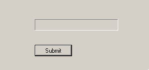

Foreword
Welcome to the always up-to-date UAV Austin installation guide.

The goal of this guide is to eventually be a compendium of the installation processes for all the tools and services used by the UAV Austin Software team. As of now, it has information about:
- Configuring your OS
- Getting set up with Git and GitHub
- Installing Rust
- Configuring your editor for Rust
- Installing Docker
As of now, we're supporting:
- Windows 10 Version 1803 (Build 17134) or newer (any edition is fine)
- macOS 10.10 Yosemite or newer
- Ubuntu 16.04.5 or newer If you're running something else, you're on your own.
If you're not sure what to do, start by configuring your OS.
This guide is currently a best-effort endeavor; it's possible and even likely that information in this guide will be outdated by the time you read it. Unfortunately, there isn't very much we can do about this. Installation involves many cross-cutting elements of the typical software stack and moves too quickly for us to reasonably always be up to date; it simply isn't very practical.
This means that it's probable that you'll have to poke around a bit and do some trial and error to get set up. We're sorry about this. If you do run into issues please let us know and we'll help you out. Or better yet, if you're willing to, file an issue or send us a PR.